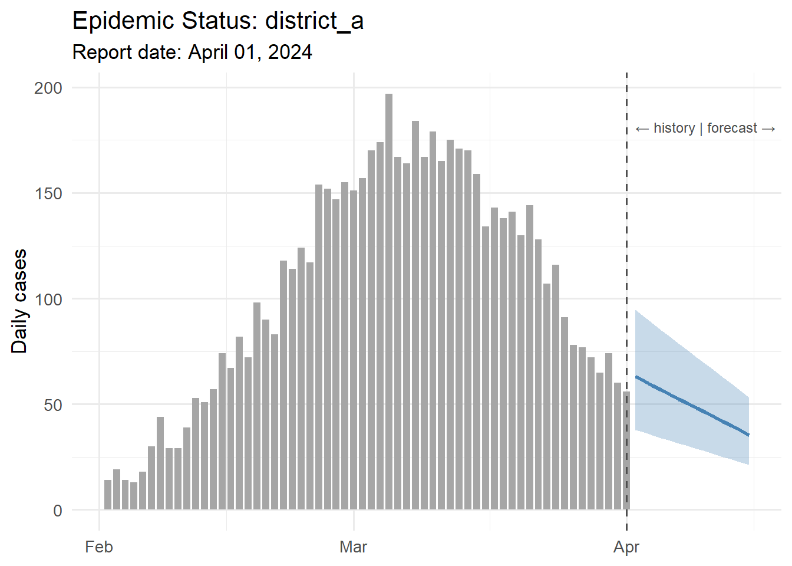

library(ggplot2)
library(dplyr)
# Simulate what the report would receive from its parameters
# (In the real template, these come from params$...)
location <- "district_a"
report_date <- as.Date("2024-04-01")
forecast_days <- 14
# Pull data from database (simulated here)
set.seed(as.integer(report_date))
n_hist <- 60
dates <- seq(report_date - n_hist + 1, report_date, by = "day")
# Simulated historical case counts
peak_day <- round(n_hist * 0.6)
peak_cases <- 180
lambda_vec <- peak_cases * exp(-0.5 * ((seq_len(n_hist) - peak_day) / 15)^2)
cases_hist <- rpois(n_hist, pmax(lambda_vec, 2))
df_hist <- data.frame(date = dates, cases = cases_hist, type = "Observed")Automated Parameterized Reports for Epidemic Scenario Outputs
Weekly briefings that write themselves — Quarto parameters, scheduled rendering, and professional PDF/HTML output. Skill 3 of 20.
business skills
reporting
Quarto
R Markdown
automation
R
1 The business problem
Every Monday morning, your client’s epidemiologist needs a briefing document: current outbreak status, 14-day forecast, and comparison to last week. You could spend 90 minutes copying numbers into PowerPoint, or you could have a script generate a polished PDF in 30 seconds.
Parameterized reports (1) solve this. A single Quarto document (2) becomes a template; parameters (location, date range, scenario) are injected at render time. The output can be HTML for dashboards or PDF for official briefings — from the same source (3).
2 Anatomy of a parameterized report
A parameterized Quarto document declares its inputs in the YAML header:
---
title: "Epidemic Status Report"
params:
location: "district_a"
report_date: "2024-03-15"
forecast_days: 14
include_uncertainty: true
---Inside the document, params$location behaves like any R variable. Render it with custom values from the command line:
quarto render report.qmd \
-P location:district_b \
-P report_date:2024-04-01 \
--output reports/district_b_2024-04-01.htmlOr from R:
quarto::quarto_render(
"report.qmd",
execute_params = list(location = "district_b",
report_date = "2024-04-01"),
output_file = "reports/district_b_2024-04-01.html"
)3 Building the report template
Below is the core content of the report template — demonstrating how parameters drive the output.
# Simple exponential smoothing forecast
last_n <- tail(cases_hist, 7)
alpha <- 0.3
smoothed <- numeric(length(last_n))
smoothed[1] <- last_n[1]
for (i in 2:length(last_n)) {
smoothed[i] <- alpha * last_n[i] + (1 - alpha) * smoothed[i - 1]
}
base <- tail(smoothed, 1)
trend <- (tail(smoothed, 1) - smoothed[1]) / (length(smoothed) - 1)
# Clip declining trend
trend <- min(trend, 0)
fcst_dates <- seq(report_date + 1, by = "day", length.out = forecast_days)
fcst_median <- pmax(1, base + trend * seq_len(forecast_days))
fcst_lo <- pmax(0, fcst_median * 0.6)
fcst_hi <- fcst_median * 1.5
df_fcst <- data.frame(
date = fcst_dates,
median = fcst_median,
lo = fcst_lo,
hi = fcst_hi
)# Key numbers for the executive summary table
week_total <- sum(tail(cases_hist, 7))
prev_total <- sum(cases_hist[(n_hist - 13):(n_hist - 7)])
change_pct <- round((week_total - prev_total) / prev_total * 100, 1)
peak_fcst <- round(max(fcst_median))
total_fcst <- round(sum(fcst_median))
summary_tbl <- data.frame(
Metric = c("Cases this week", "Change vs prior week",
"Peak forecast (next 14d)", "Total forecast (next 14d)"),
Value = c(format(week_total, big.mark = ","),
paste0(ifelse(change_pct > 0, "+", ""), change_pct, "%"),
format(peak_fcst, big.mark = ","),
format(total_fcst, big.mark = ","))
)
knitr::kable(summary_tbl, caption = paste("Summary for", location,
"as of", format(report_date, "%B %d, %Y")))| Metric | Value |
|---|---|
| Cases this week | 482 |
| Change vs prior week | -43.8% |
| Peak forecast (next 14d) | 63 |
| Total forecast (next 14d) | 689 |
ggplot() +
geom_col(data = df_hist, aes(x = date, y = cases),
fill = "grey65", width = 0.8) +
geom_ribbon(data = df_fcst,
aes(x = date, ymin = lo, ymax = hi),
fill = "steelblue", alpha = 0.3) +
geom_line(data = df_fcst, aes(x = date, y = median),
colour = "steelblue", linewidth = 1.2) +
geom_vline(xintercept = report_date, linetype = "dashed",
colour = "grey30") +
annotate("text", x = report_date + 1,
y = max(cases_hist) * 0.92,
label = "← history | forecast →",
hjust = 0, size = 3.2, colour = "grey30") +
labs(x = NULL, y = "Daily cases",
title = paste("Epidemic Status:", location),
subtitle = paste("Report date:", format(report_date, "%B %d, %Y"))) +
theme_minimal(base_size = 13)
4 Generating multiple reports at once
Loop over all client locations and dates:
# generate_reports.R
library(quarto)
locations <- c("district_a", "district_b", "district_c")
report_date <- Sys.Date()
for (loc in locations) {
out_file <- sprintf("reports/%s_%s.html", loc,
format(report_date, "%Y-%m-%d"))
quarto_render(
"report_template.qmd",
execute_params = list(location = loc,
report_date = as.character(report_date),
forecast_days = 14),
output_file = out_file
)
message("Generated: ", out_file)
}Schedule this with cron (Linux) or Task Scheduler (Windows) to run every Monday at 6 AM, and reports land in a shared folder before the 9 AM meeting.
5 Professional formatting tips
- Use
gtorkableExtrafor tables — they render correctly in both HTML and PDF. - Set
format: pdfin the YAML for official documents;format: htmlfor web delivery. - Add a
params-driven title block:title: "Epidemic Status Report — ?meta:params.location". - For branded output, add a custom SCSS theme (HTML) or LaTeX template (PDF) once and reuse across all reports.
6 References
1.
Xie Y, Allaire JJ, Grolemund G. R markdown: The definitive guide [Internet]. Chapman; Hall/CRC; 2018. Available from: https://bookdown.org/yihui/rmarkdown/
2.
Allaire JJ, Teague C, Scheidegger C, Xie Y, Dervieux C. Quarto. 2022. doi:10.5281/zenodo.5960048
3.
Knuth DE. Literate programming. The Computer Journal. 1984;27(2):97–111. doi:10.1093/comjnl/27.2.97